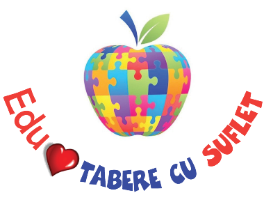

/ Proiecte WeCare / Edu WeCare

Edu WeCare este un proiect educational WeCare al Asociatiei Tabere cu Suflet, care are ca obiectiv sprijinirea copiilor in procesul educativ, in spiritul Valorilor Tabere cu Suflet. Pentru atingerea acestui obiectiv au fost avute in vedere participarea la diferite activitati, precum si initierea mai multor programe:
- Excelenta Tabere cu Suflet este un program Edu WeCare prin care se ofera burse scolare, se acopera costurile de participare la competitiile internationale si se acorda facilitati la inscrierea la tabere, pentru copiii cu rezultate deosebite la invatatura. Mai multe detalii
- Invatam si ne distram este un proiect educational Edu WeCare prin care copiii au acces gratuit, on line sau off line, la diferite programe bazate pe mai multe domenii de cunoastere, aflate sau nu in materia scolara. Mai multe detalii
- Scoala Altfel / Scoala Verde: Pentru a veni in intampinarea unitatilor de invatamant (scoli, gradinite, licee etc) si pentru a sprijini diferitele programe guvernamentale, cum ar fi Scoala Altfel sau Scoala Verde, am creat o serie de activitati specifice, de una sau mai multe zile! Si pentru ca totul sa fie si mai placut, multe dintre aceste activitati sunt ProBono, costurile fiind sustinute prin programul Edu WeCare:) Mai multe detalii
- Ziua Educatiei: O data pe an, in 5 octombrie, organizam diferite activitati pentru a marca Ziua Mondiala a Educatiei si a transmite faptul ca o educatie de calitate ne formeaza ca Oameni si inlesneste calea catre o Lume mai Buna! Mai multe detalii
- Joyful Teaching este un proiect care se ocupa de educatia copiilor, prin instruirea profesorilor. Este organizat de o asociatie partenera, iar Asociatia Tabere cu Suflet a participat la proiect si s-a implicat activ in promovarea acestuia. Mai multe detalii
- Alte proiecte: In afara proiectelor mentionate, de-a lungul timpul am organizat o serie de activitati pentru sprijinirea copiilor in procesul educativ, cum ar fi, spre exemplu, ajutorul dat copiilor din Pokara, Nepal, pentru prevenirea abandonului scolar, in cadrul proiectului Chetana Women Skill Development Project Mai multe detalii
"Profesorii buni sunt cei care au darul sa aprinda o scanteie magica in inima copiilor..." Mai multe Ganduri